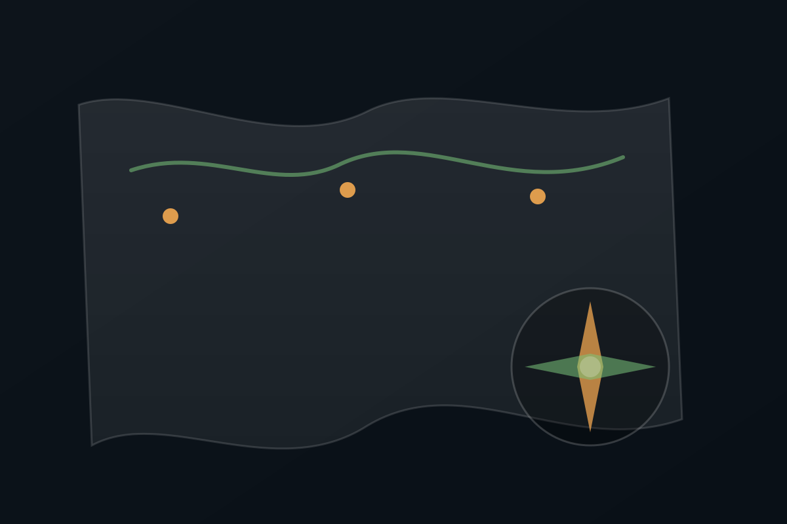
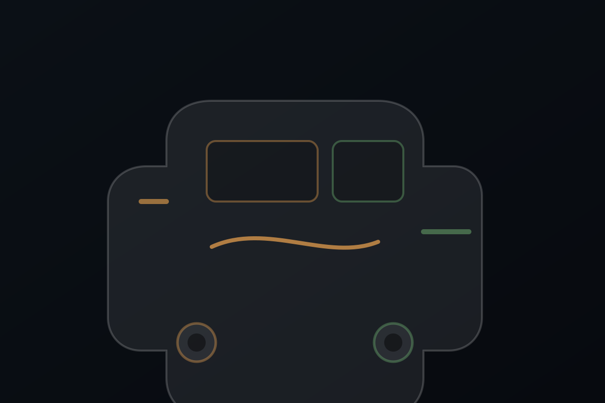
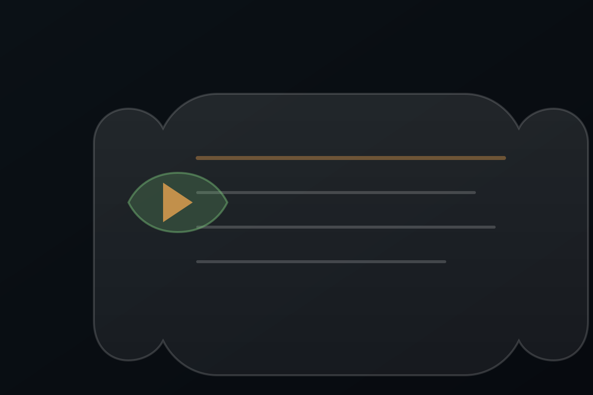
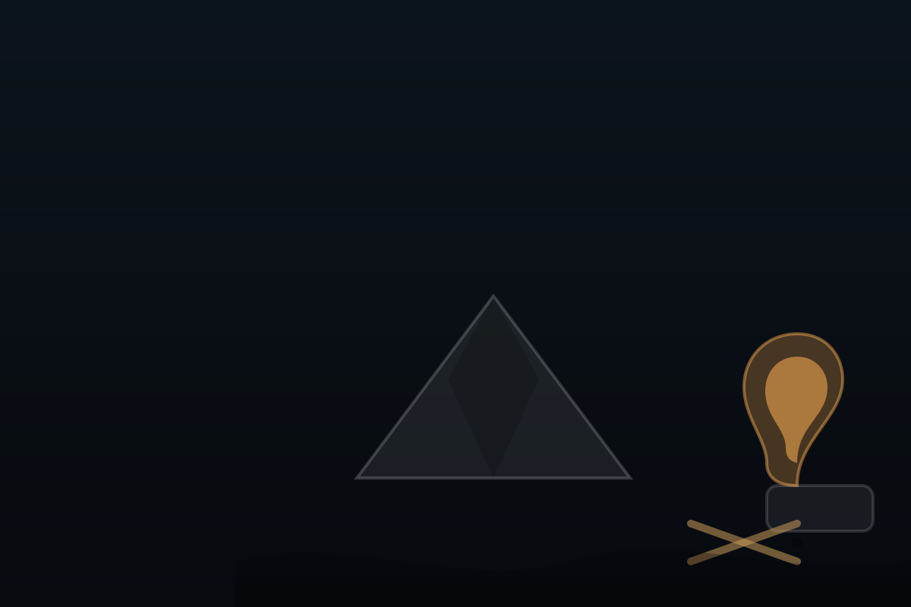
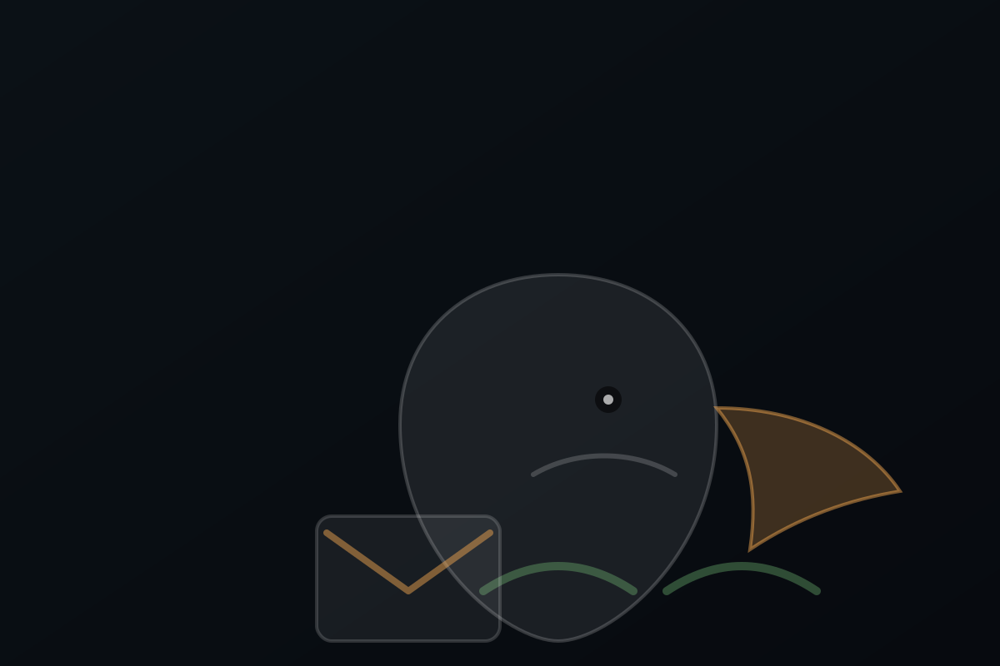

лесной стиль
техническая карточка · журнал обслуживания
Galloper2 —
железный зверь
из сказочного леса
Одностраничник без лишнего: спецификации, узлы, расходники и история работ. Стиль — мужской, но с мягкой мультяшной графикой, как если бы лесник вел журнал экспедиционного авто.
Двигатель2.5 дизель
АКППавтомат
Привод4WD
ГородМосква
Технические данные
Спецификация автомобиля
Заполняется блоками: быстро, удобно, читается как паспорт.
🪓 лесник
🌲 лес
🛠️ сервис

Основное
Марка / модельHyundai Galloper
Год2000–2002 (уточнить)
Двигатель2.5 дизель (D4BH — если так)
НаддувIntercooler (если есть)
КоробкаАКПП
Привод4WD
Кузоввнедорожник
Цвет—
Текст везде можно менять прямо в index.html (поиск по словам).

Узлы и расходники
Масло двигателя—
Фильтр масляный—
Фильтр топливный—
Фильтр воздушный—
ATF (АКПП)—
Раздатка/мосты—
ОЖ—
Ремни—
Если захочешь, добавлю “кнопку печати” именно блока техданных — чтобы отдавать листом механику.
История обслуживания
Журнал работ
Короткие записи: что сделано, когда, на каком пробеге, с какими примечаниями.

Лента обслуживания
Масло + фильтры (база)
Точка отсчёта: убрать неизвестность, поставить ритм обслуживания.
Диагностика АКПП
Симптомы/ошибки/план работ (добавить итоги диагностики).
Турбина / интеркулер
Осмотр патрубков, люфт, утечки, интеркулер (фиксируем факты).
Кнопка “Скопировать” берёт текст ленты и складывает в буфер.
Заметки
Что важно помнить
Короткие маркеры: наблюдения, симптомы, что проверять, что планируется.

Список заметок
- АКПП: пинки на 2→3 (уточнить условия: холодная/горячая).
- Двигатель: расход масла ~300 мл от замены до замены (если актуально).
- План: сервис/диагностика слоями, без “всё сразу”.
- Следующее ТО: дата/пробег — поставить напоминание.
Лесная логика
Сначала факты, потом решения. Сначала база, потом улучшения.
Контакты
Связь
Опционально. Если страница личная — оставь пусто. Если “для продажи” — заполни.
